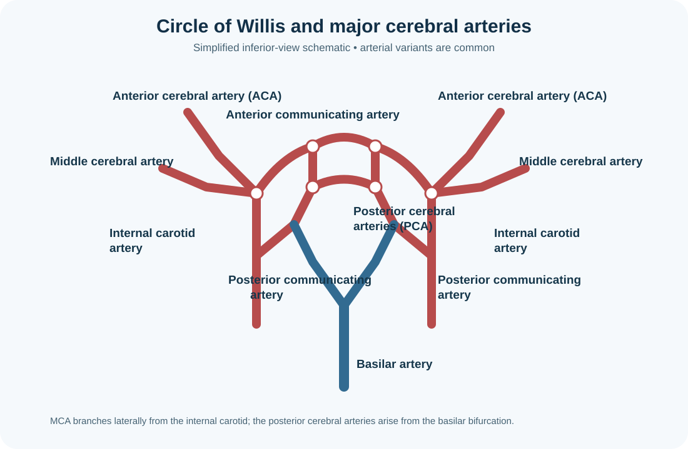

Cerebral blood supply, circle of Willis and stroke anatomy
The brain receives arterial blood mainly through the paired internal carotid and vertebral arteries. The vertebral arteries unite to form the basilar artery, which contributes to the posterior circulation; the internal carotid arteries supply much of the anterior circulation. Communicating arteries link these systems in the circle of Willis, although its completeness and vessel calibre vary. Major cerebral arteries supply recognisable territories, but borders overlap and collateral flow differs between individuals. Venous drainage occurs through cerebral veins and dural venous sinuses, which ultimately drain toward the internal jugular veins.
Learning objectives
- Trace the main anterior and posterior cerebral circulations.
- Identify the role and limitations of the circle of Willis.
- Relate arterial territories to broad neurological deficits.
High-yield study points
- The anterior cerebral artery supplies much of the medial frontal and parietal surfaces.
- The middle cerebral artery supplies much of the lateral cerebral hemisphere, including important language and motor-sensory regions.
- The posterior cerebral artery supplies much of the occipital lobe and inferomedial temporal region.
- The basilar artery gives rise to branches supplying the brainstem and cerebellum, including the posterior cerebral arteries at its termination.
- Vascular territory patterns are guides; anatomical variation and collateral circulation alter clinical presentations.
Clinical connection
Sudden facial weakness, arm weakness, speech disturbance, visual loss or imbalance can indicate stroke. Acute neurological symptoms require emergency evaluation; anatomical localisation must not delay care.
Memory aid / mnemonic
ACA = leg area; MCA = lateral face/arm and dominant-side language; PCA = visual cortex. These are broad patterns, not diagnostic rules.
Revision tip: recall the cue without looking, then explain the anatomical reason behind it.
Visual guide: Circle of Willis

Check your understanding
- Which arteries supply much of the medial frontal and parietal surfaces?
Answer
The anterior cerebral arteries, although the precise territory varies.
- Which artery commonly supplies much of the lateral cerebral hemisphere?
Answer
The middle cerebral artery, including large portions of lateral frontal, parietal and temporal cortex.
- Does the Circle of Willis guarantee sufficient collateral flow after an occlusion?
Answer
No. Completeness, vessel calibre, pressure gradients and individual variation influence collateral perfusion.
Further reading
OpenStax, Anatomy and Physiology 2e — cardiovascular anatomy and central nervous system blood supply.